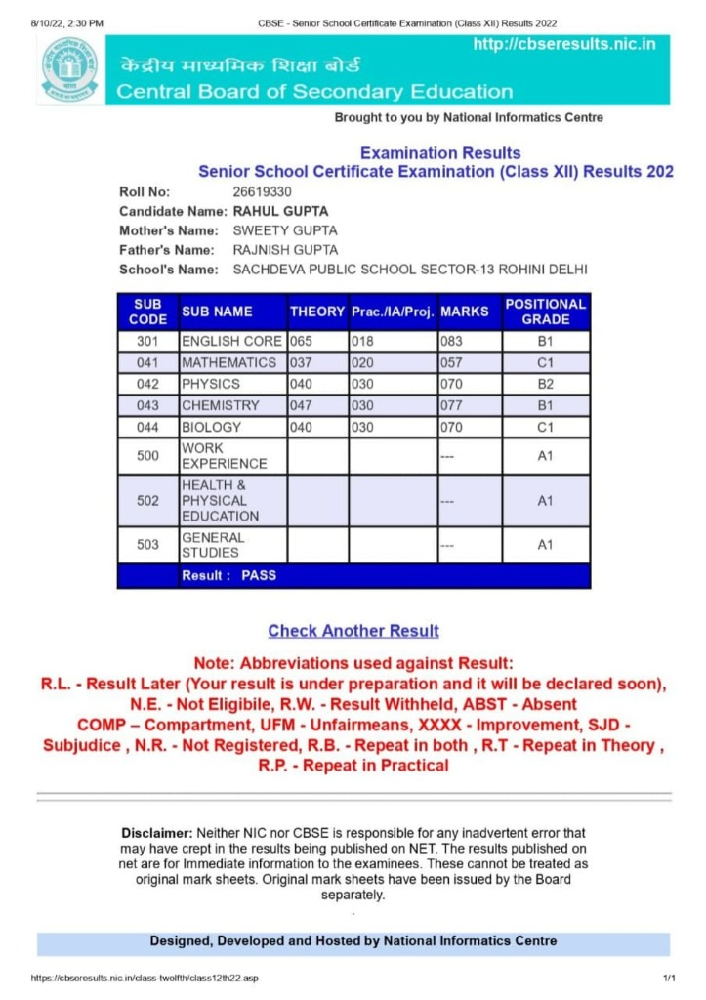
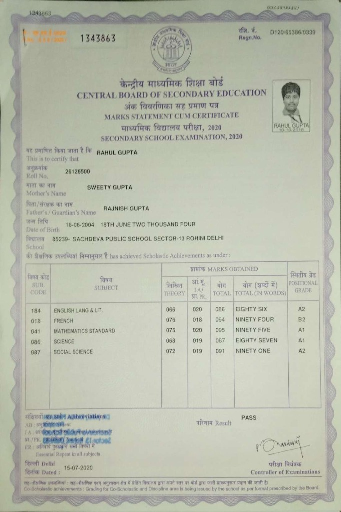

Education & Academics
Academic foundations bridging computer science honors at Delhi University, rigorous secondary education with science & mathematics, and cognitive arithmetic training.
Keshav Mahavidyalaya — Delhi University
Bsc (Hons), Computer ScienceEnrolled in the prestigious Bachelor of Science (Honours) Computer Science program at University of Delhi. Rigorous curriculum integrating deep theoretical foundations with hands-on systems development: Data Structures & Algorithms, Object-Oriented Programming, Computer Systems Architecture, Discrete Mathematical Structures, Database Management Systems, and Web Engineering. Actively participating in open-source development and tech campus initiatives.
Sachdeva Public School, Sector - 13, Rohini, Delhi
Senior Secondary, 12th (PCMB)Completed Senior Secondary education under CBSE in the comprehensive PCMB track (Physics, Chemistry, Mathematics, and Biology). Developed advanced quantitative acumen, differential calculus mastery, organic chemistry analysis, and systematic empirical investigation skills.

Sachdeva Public School, Sector - 13, Rohini, Delhi
Secondary Schooling, 10thGraduated Class 10 with outstanding distinction (90.6%), recognized for scholastic excellence in mathematics, physical sciences, and language proficiencies. Studied French as an international language alongside comprehensive social sciences and foundational IT.

Sachdeva Public School, Sector - 13, Rohini, Delhi
Middle Stage, 8thMiddle schooling focused on holistic intellectual growth, early foreign language fluency (French), science laboratory fundamentals, and logical deduction.
Study Abacus – Developing Brain
Vedic Mathematics - AdvanceFour-year intensive specialized training in advanced Vedic Mathematics. Mastered mental algebra shortcuts, fast multi-digit arithmetic, rapid square roots, simultaneous equation solving, and algorithmic pattern recognition without conventional paper computation.
Study Abacus – Developing Brain
Abacus AdvanceFour years of continuous cognitive mental arithmetic training utilizing soroban abacus methodologies. Enhanced bilateral brain activation, photographic numerical memory, intense concentration, and rapid split-second spatial mental math.